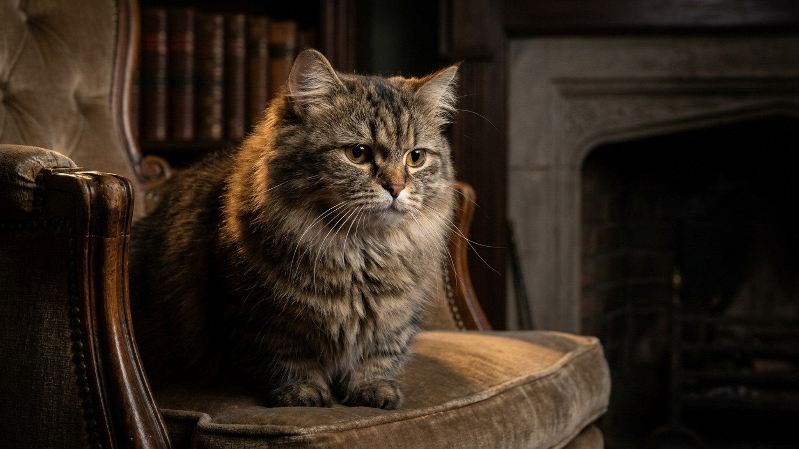

Манчкин не запрыгнет на холодильник и редко окажется на шкафу — короткие лапы просто не дают высоты. Но популярный миф, будто эта кошка живёт в постоянной боли, не подтверждается: манчкины бегают, играют и встают «сурикатом» не хуже длинноногих. Что действительно требует внимания — вес, доступ к нужным местам и спина. Разберём, что важно в уходе именно за коротколапой кошкой.
🐾 Не уверены, что это опасно?
Опишите симптом в AnimaLife — AI-ветеринар за минуту подскажет, что в пределах нормы, а когда пора к врачу.
Коротколапость манчкина — это естественная генетическая особенность, а не результат болезни. В отличие от собак с похожим сложением, у манчкинов обычно не страдает позвоночник: спина у них устроена иначе, и большинство кошек двигаются абсолютно свободно.
Манчкин прекрасно бегает, поворачивает на скорости и обожает вставать столбиком на задние лапы, осматриваясь вокруг, — отсюда прозвище «кот-сурикат». Боль и скованность для породы не норма: если кошка двигается с трудом, это повод показать её ветеринару, а не «особенность манчкина».
Главное ограничение породы — высота. Манчкин не возьмёт вертикаль одним прыжком, и дом стоит подстроить под это.
Вот где особенность породы действительно требует дисциплины. Лишний вес на коротких лапах сильнее нагружает суставы и спину, чем у длинноногой кошки. Манчкины склонны к набору массы, а двигаются по высоте меньше — расход энергии ниже.
Манчкины — общительные, любопытные и игривые кошки, легко уживаются с детьми и другими питомцами. Они азартны и до старости сохраняют котячьи повадки, включая привычку прятать мелочи «в норку».
Уход за шерстью зависит от длины: короткошёрстных вычёсывают раз в неделю, длинношёрстных — 2–3 раза. Перед покупкой котёнка обсудите с заводчиком здоровье линии, а плановые осмотры у ветеринара проходите как для любой кошки. Манчкин — не «инвалид с короткими лапами», а полноценная активная кошка, которой нужен лишь дом, подстроенный под её рост, и контроль веса.
🐾 Питомец ведёт себя странно?
AnimaLife расшифрует поведение кошки и собаки и подскажет, что делать. Попробуйте бесплатно прямо в мессенджере.
🐾 Понравился разбор?
Подпишитесь на канал — каждый день разбираем по одному тревожному симптому у кошек и собак: что в пределах нормы, а когда пора к врачу. Подпишитесь, чтобы не пропустить разбор, который может спасти здоровье вашего питомца.
Материал носит информационный характер и не заменяет очную консультацию ветеринара.